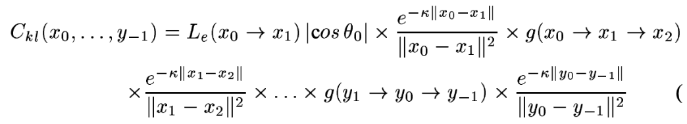
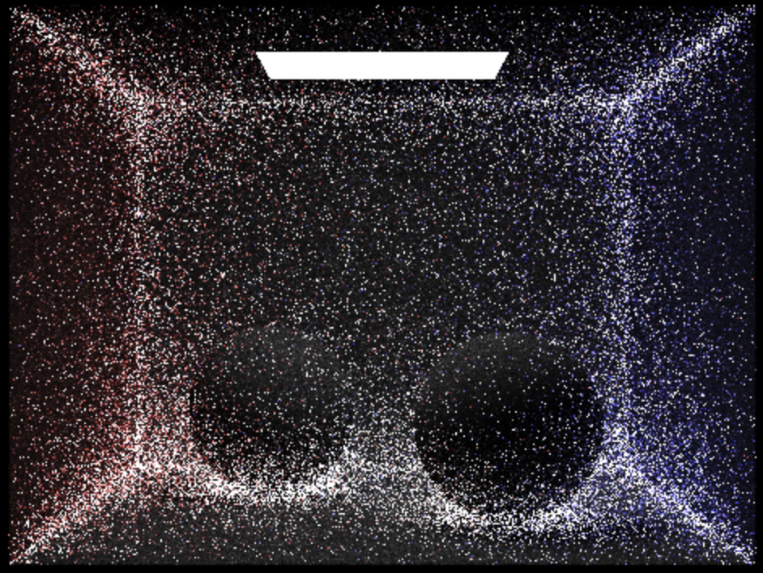

Over the past two weeks, we have developed an idea to implement volumetric scattering after finding that our first project idea was not feasible.
Our main implementation is to build on the ray tracing algorithm from homework 3 which does not consider interactions with particles in the medium.
We referenced these two research papers to form our implementation:
To do this, we use Monte Carlo sampling and complete the following steps for each sample:
Sample a random path (whether an interaction with a particle occurs or not and whether the interaction will absorb or scatter the photon)
We can then use the following probabilities to compute this:
Probability of an interaction with a particle occurring: \(\sigma_t \cdot e^{-t \cdot \sigma_t}\)
Probability of a photon being absorbed by the particle given an interaction occurs: \(\sigma_a / \sigma_t\)
Probability of a photon being scattered by the particle given an interaction occurs: \(\sigma_s / \sigma_t\)
Probability of the scattered direction given the photon is scattered: \(1 / 4\pi\)
Now, we can compute the radiance following this formula that solves for the illumination contribution of the path

The probability of this sampled path can be found using the formulas from above
Preliminary Results:

This is the output to our implementation attempt of Volumetric Integration. By retracing the path from the camera to the light source, we randomly decide whether the next point in the path is from a position it got scattered along the way or intersected/reflected on a surface. While doing this, we attempted to calculate the radiance effect this had to the incoming radiance. It would have also took into account the probability of each status: scattered by this direction, or reflected by this direction, for Monte Carlo integration. Our code's main issue that we plan to fix is the fact that it still needed to account for the one bounce radiance at each next position while taking the volumetric integration effect into account.
Progress Relative to Our Plan:
Since we decided not to implement our first project idea, our plan from the project proposal is not relevant anymore and we have established this new plan:
Before the milestone, read into how volumetric scattering can be implemented on top of our current ray tracing algorithm and establish an idea to implement volumetric scattering.
It would be great if we could start some of the code implementation, but due to the time constraint and changing our idea so last minute after attempting to implement our first idea, it is possible our code will not fully run.
After the milestone, complete the volumetric scattering addition to our ray tracing algorithm and add one to this by using different functions or have different scenes.
Updating Our Work Plan:
Week 3: Finish our current idea of implementing volumetric scattering
Week 4: Finalize implementation and add any cool features that removing the box in the scene or using different phase functions